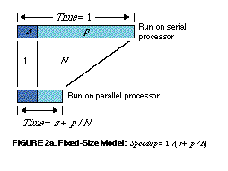
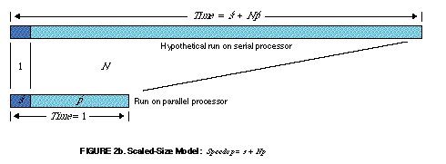

El problema de paralelizar 2
Durante una hora un automovil ha recorrido la mitad de la distancia entre dos ciudades, las que se encuentran separadas por 120 Kms. No importa la velocidad que tome el auto para recorrer el resto del camino, su velocidad media siempre será menor a 120 Km/hr (sólo si la velocidad fuera infinita se podría alcanzar los 120 Km/hr).
Ese ejemplo sirve para entender la Ley de Amdahl que presenté anteriormente.
Pero supongamos que un automovil ya ha estado viajando por un tiempo a menos de 120 Km/hr. Dado suficiente tiempo y distancia para viajar, la velocidad media del auto puede eventualmente alcanzar los 120 Km/hr, no importa cuan lento ha viajado.

John L. Gustafson
Este otro ejemplo es más o menos lo que dice la Ley de Gustafson.
En 1988 John Gustafson cuestionó la validez del argumento de Amdahl. En ese tiempo este investigador usaba supercomputadores en los laboratorios de alta energía Sandia Labs, y descubrió que los tiempos que medía no calzaban con lo predicho por la Ley de Amdahl.
De acuerdo a la fórmula que vimos antes, la mejora de velocidad, o speedup está dada por Speedup = 1 / (s + p / N). Donde s es el tiempo en la parte serial y p es el tiempo que toma 1 procesador en la parte paralela del problema, y N es la cantidad de procesadores.
Gustafson notó que para un valor de s entre 0,4% y 0,8% obtenía valores de speedup de 1020 ó 1016, usando un hipercubo con 1024 procesadores. Si hacen los cálculos verán que eso no se ajusta a lo predicho por la Ley de Amhdal (para s = 0,4% el valor speedup es = 1 / (0,004 + 0,996/1024) = 201,099).
Gustafson se dió cuenta que Amdahl asume que la parte paralelizable p es independiente del valor N, o sea, de la cantidad de procesadores, esto casi nunca se da, de acuerdo a Gustafson, en la práctica el tamaño del problema escala con la cantidad de procesadores.
Gustafson propuso una ley distinta para los problemas en que la parte paralela p' depende linealmente de la cantidad de procesadores N.
Scaled Speedup = N + (1 - N ) s'
Gustafson publicó su resultado en Communications of the ACM en 1988, pueden leer el artículo acá.
Las siguientes figuras resumen el argumento de Gustafson (recuerden el argumento de los automóviles para poder comprender mejor):

La figura 2a asume un modelo donde la parte paralela es independiente de la cantidad de procesadores (modelo de tamaño fijo).

La figura 2b asume que la parte paralelizable (p') del problema escala según la cantidad de procesadores (en forma lineal), si tengo 2 procesadores la parte paralelizable corre al doble de la velocidad.
Con el argumento de Gustafson la ley de Amdahl parecía destronada, y los partidarios del procesamiento paralelo masivo podían respirar tranquilos, la mejora en velocidad es proporcional a la cantidad de procesadores.
Piensen lo siguiente, supongan que tienen un proceso que puede ser trivialmente paralelizable. No es dificil imaginar ese problema, por ejemplo, multiplicar todos los elementos de una matriz A de NxM por un valor constante, por ejemplo 2.
A[i,j] = A[i,j] * 2
En este caso s = 0, p = 1, y queda claro que el speedup es N, cualquiera que sea la fórmula que usemos, la de Gustafson o la de Amdahl.
Pero fuera de estos problemas "vergonzosamente paralelizables" los otros problemas que observan el comportamiento de la ley de Gustafson son aquellos que exhiben un paralelismo escalable (los problemas trivialmente paralelizable son escalables en paralelo).
Muchos de los problemas que se ajustan mejor a la ley de Gustafson son susceptibles de ser paralelizados en forma automática, y hay compiladores que pueden detectar dependencias de los datos y generar código altamente paralelizable.
Estos problemas se dan mucho en la física, o en cálculos matemáticos sobre matrices y vectores.
Pero lo interesante es que en realidad la Ley de Gustafson y la Ley de Amdahl están emparentadas, de hecho, la ley de Gustafson es otra forma de ver la Ley de Amdahl, son leyes equivalentes. Por años esto no se comprendió muy bien, y generó malas interpretaciones.
En palabras de Yuan Shi, el investigador que descubrió la equivalencia de ambas leyes:
"En 1967, la Ley de Amhdal fue usada como un argumento en contra del procesamiento paralelo masivo. Desde 1988 la Ley de Gustafson ha sido usada para justificar el procesamiento paralelo masivo. Interesantemente, un análisis cuidadoso revela que estas dos leyes son de hecho idénticas. Los bien publicitados argumentos fueron el resultado de un malentendido sobre la naturaleza de ambas leyes".
Y sobre la naturaleza de estas leyes vamos a hablar en la tercera parte.